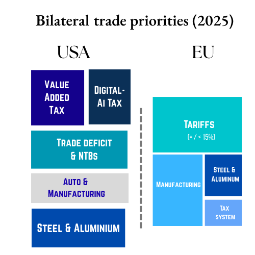

US-EU trade summary (2024)
In 2024, US imported $606 billion in goods from the EU, representing ~19.7 % of total US goods imports (~$3.07 trillion). ~20.6 % of EU goods exports in 2024 (~$585 billion) were destined for the US. ~13.7 % of EU goods imports (~$367 billion) originated from the US in 2024. In 2024, US exported ~$370 billion in goods to the EU, ~12.0 % of US merchandise exports (~$3.07 trillion); including services, bilateral trade were ~€1.68 trillion.
US- EU Trade: Key sectors
EU → US Goods: medicinal & pharmaceutical products (~22.5 %), road vehicles (~9.6 %), industrial machinery (~6.4 %), electrical appliances (~6.0 %), specialized machinery (~5.0 %) – top five = ~50 % of exports
EU → US Services: Professional, scientific & technical; telecom/information services; transport services
US → EU Goods: petroleum products (~16.1 %), pharmaceuticals (~13.8 %), power-generating machinery (~9.2 %), gas & other transport equipment (~5–5.5%)
US → EU Services: Intellectual property royalties; professional & technical; telecom/information services
Negotiation timeline
March 2026
- March 12: US imposes 25% steel and aluminium tariffs.
- March 25: EU limits steel imports (in general not just US).
- March 26: US 25% on Auto imports (proposal).
Active Tariffs:
Steel and Aluminium; Auto 25% (proposal)April 2025
April 2: Liberation day – 10% blanket + 90-day pause.
April 10: EU pauses counter tariffs.Active Tariffs:
General EU imports: 10%; Steel-Aluminium: 25%
Tariff escalation paused (20–50% proposed, not yet enforced)May 2025
- May 8: EU second round of tariffs (focused on Republican heartland).
- May 23: US threatens 50% general tariff hike.
- May 27: EU Offers:
- removal of tariffs on industrial goods.
- boost access for some US agricultural products.
- co-develop AI data centres.
- shipbuilding.
- port infrastructure.
- EU-US energy partnership (gas, nuclear power and oil).
- EU Demands: lower than 10% baseline tariff.
- US Demands:
- VAT
- Digital barriers
- Food exports
- Restrict imports from with China.
- Tariffs against subsidised Chinese exports.
Active Tariffs:
General EU imports: 10%; Steel-Aluminium: 25%July 2025
July 12: US threatens 30% tariff by Aug 1.
July 13: pauses counter tariffs.
July 27: Wide-ranging trade agreement
- 15% Tariffs on most EU goods.
- Exemption: plane parts, semiconductor equipment, certain chemicals and (some) agricultural products.
- EU buys $750b of US energy.
- EU invests $600b in the US .
- Steel and Aluminium tariffs at 50% (Likely to be replaced by zero tariff quota system).
- 0 tariffs for US exports to EU.
Active Tariffs:
Most EU goods: 10% (until August 2, then 15%)
Steel, aluminium, copper: 50%
Aircraft parts, semiconductors, some pharmaceuticals: 0%August 2025
Aug 21: Framework Agreement
- Formalisation of July 27 Agreement.
- US-EU announce a Framework on an Agreement on Reciprocal, Fair, and Balanced Trade.
- Elimination of all EU tariffs on US goods.
- US commits to offer higher of 2 to EU : a MFN (Most Favoured Nation) status or a 15% tariffs (in specific sectors).
- US applied only MFN status (not 15% tariff) on
- natural resources unavailable in the US( including cork).
- all aircraft and aircraft parts.
- generic pharmaceuticals, their ingredients and chemical precursors.
- EU pledges to increase military-defence equipment import from the US.
- Eliminate or remove non-tariff barriers.
- Cooperation and further negotiation on Steel and Aluminium to be explored keeping in mind overcapacity
- EU seeks to easy environmental regulations related to carbon emission, deforestation, and sustainability .
- No mutual custom duties on Digital trade
- Cooperation on third party import of critical minerals and rare earths
September 2025
October 2025
November 2025
December 2025
January 2026
Jan 17: President’s public tariff threat tied to the Greenland dispute: announcement of a 10% tariff from Feb 1, rising to 25% from June on goods from multiple European countries; EU summoned emergency coordination.
Jan 18: EU leaders moved to consider countermeasures (including use of the EU Anti-Coercion Instrument and potential €93 bn. tariff package) and scheduled emergency discussions; markets and rating agencies warned of geopolitical economic risk.

Understanding USA’s Priorities
Priority
- Automobile, steel & aluminium tariffs – Retaining Section 232 tariffs (Steel-Aluminium tariffs) pending deal; autos still potentially subject to 25–27.5% unless exempted
- Investment & energy purchase commitments – Demand of $600 b EU investment and $750 b US energy imports from EU
- Value Added Tax of EU creates a major barrier of entry for American products entering US market considering the American Sales Tax feature
- Digital Taxes of EU in areas of Digital Services Tax, Digital Advertising Tax, Digital Transaction Tax, and AI tax opposed by American tech and social media lobbies
- Semiconductor & pharmaceutical tariff threats – Additional tariffs possible up to 250% in pharma and on chips if no deal by Aug–Sep 2025
- FDI into US’ manufacturing sector
- Energy imports from US
- De-couple from Chinese imports.
Understanding EU’s Priorities
Priority
- Limit all kinds of Tariffs from the US– this is owing to US’ stature as EU’s largest trading partner.
- Industrial sector protection – Pushback from automakers, pharma firms especially in Germany, might threaten the unity within the EU.
- Maintain Status quo: a deficit in services and a surplus in goods.
- No compromise of domestic tax and regulatory mechanisms: VAT, Digital tax
- Preserving bilateral services balance – EU runs goods surplus but services deficit ; concern over tech & IP dominance from US.
- EU has developed a comprehensive tax system in the form of the Value Added Tax which is providing a price advantage to products produced in the EU. Additionally, the Digital service and transaction taxes of the EU are also a reform measure that has been carefully designed by the EU which restricts the monopoly of big-tech and social media corporations while also ensuring consumer protection. EU views these taxes are core to protecting its sovereignty, thus making negotiations with the US- from where major tech corporations are based- harder.
References
- https://www.consilium.europa.eu/en/infographics/eu-us-trade/
- https://www.eureporter.co/economy/trade-2/2025/03/13/trade-in-goods-with-the-united-states-in-2024/
- https://ec.europa.eu/eurostat/web/products-eurostat-news/w/ddn-20250311-1
- https://www.dw.com/en/a-brief-history-of-the-euus-trade-talks-in-2025/a-73441969
- https://www.bbc.com/news/articles/c14g8gk8vdlo
- https://www.cfr.org/article/us-eu-trade-deal-avoids-tariff-war-deepens-european-dependence
- https://www.euronews.com/my-europe/2025/08/21/eu-us-release-long-awaited-trade-statement-setting-15-all-inclusive-tariff-on-eu-goods
- https://policy.trade.ec.europa.eu/news/joint-statement-united-states-european-union-framework-agreement-reciprocal-fair-and-balanced-trade-2025-08-21_en